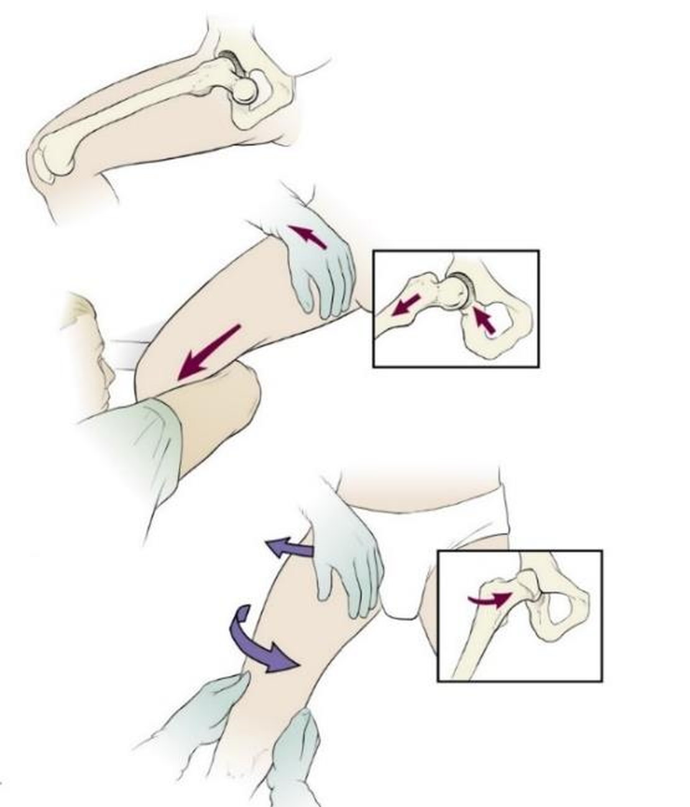
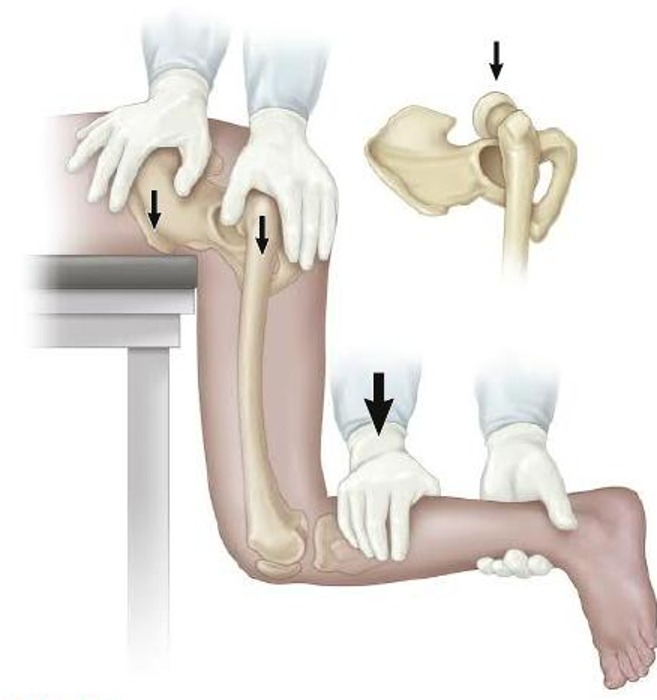

Na luxação traumática anterior do quadril na criança, a manobra de redução ilustrada na figura a seguir é a de

Paciente em decúbito dorsal, tração no eixo do fêmur com a cabeça empurrada para trás e, em seguida, adução com rotação interna até a cabeça entrar no acetábulo.
Tachdjian's Pediatric Orthopaedics, 6ª ed., cap. 30, p. 1297 e 1300 (Fig. 30.32)

STIMSON é de bruços, com o membro pendente (Tachdjian, Fig. 30.31, p. 1299)
| STIMSON | prono, a gravidade reduz |
| BIGELOW | supino, com circundução no fim |
| STEWART-MILFORD | não é manobra: é classificação |